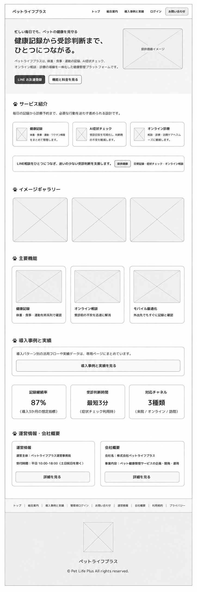
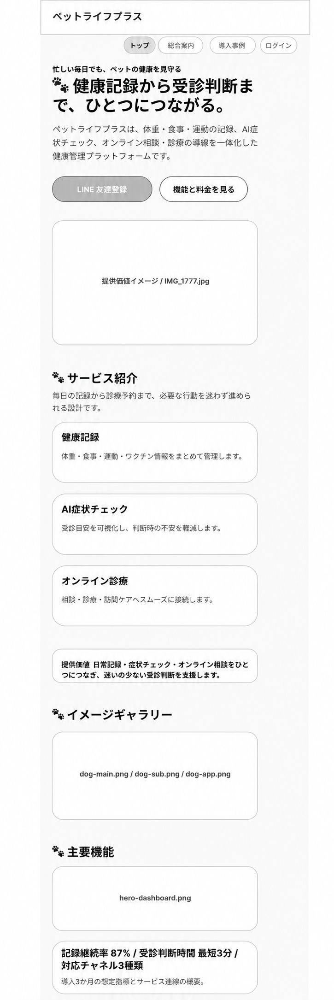

ワイヤーフレーム
ワイヤーフレーム作成方法
トップページ
【PCワイヤー（12カラム基準）】
・コンテナ幅：min(960px, 82vw)
・PC切替：768px以上
・セクション間余白：36px
・構成：2カラム + 3カラムカードの組み合わせ
1. ヘッダー（min-height 56px / sticky）
左：ブランド名 / 右：横並びナビ（トップ / 総合案内 / 導入事例と実績 / ログイン / お問い合わせ）
2. ヒーロー（`.hero-grid`）
左右比率：1.2fr / 0.8fr、gap 24px
左：見出し・説明・CTA / 右：ビジュアルカード
3. サービス紹介・主要機能（`.card-grid`）
PCでは3列（`repeat(3, 1fr)` / gap 22px）
4. 提供価値バナー（`.value-banner`）
横スクロール帯で価値メッセージを反復表示し、ヒーロー直後で訴求を補強
5. イメージギャラリー・主要機能（`.image-card` + `.card-grid`）
画像カード3列で利用イメージを提示し、機能理解を促進
6. 導入事例導線 + 実績KPI（`.card` / `.stats-grid`）
事例ページへの導線カードの後に、KPI3列（記録継続率 / 受診判断時間 / 対応チャネル）を配置
7. 運営情報・会社概要（`.compact-grid`）
2列カードで運営主体・会社情報を明示し、信頼性確認を補助
8. CTA導線（`.actions`）
主要CTAはヒーロー内で横並び（`display:flex` / `gap:10px`）に配置
9. フッター（`.footer-grid`）
リンク群を横方向に配置し、運営情報・法務・サポートへ到達しやすくする
ワイヤーフレーム画像配置：
<img src="../img/index.png" alt="トップページ PC版 ワイヤーフレーム">

なぜその位置か：全ページ共通で最上部に固定し、どの閲覧タイミングでも主要導線（サービス紹介・ご利用の流れ・運営情報・お問い合わせ・ログイン）へ即アクセスできるようにするため。
ユーザーへの効果：迷子になりにくく、比較検討中でもすぐに必要情報へ戻れる。行動（相談/ログイン）への心理的ハードルが下がる。
なぜその位置か：ファーストビューに配置し、サービス価値と対象ユーザーへの適合性を最初の数秒で伝えるため。CTAも同時配置して初動離脱を防ぐため。
ユーザーへの効果：「自分向けサービスか」を短時間で判断でき、次の行動（詳細閲覧・相談予約）へ自然に進める。
なぜその位置か：ヒーロー直下に置き、興味を持った直後に機能の具体像（健康記録・AIチェック・診療連携）を提示するため。
ユーザーへの効果：抽象的な魅力だけでなく、利用時のイメージが明確になる。比較検討時の理解コストが下がる。
なぜその位置か：機能理解の後段に配置し、導入判断の直前で信頼情報（事例・数値）を提示するため。
ユーザーへの効果：「本当に効果があるか」という不安を軽減し、意思決定を後押しできる。
なぜその位置か：ヒーロー内に主要CTAを配置し、価値理解の初期段階で即行動できるようにするため。
ユーザーへの効果：検討から申込みへの遷移がスムーズになり、離脱前にアクションを取りやすくなる。
なぜその位置か：ページ末尾に法務情報・運営情報・補助リンクを集約し、最終確認ニーズに対応するため。
ユーザーへの効果：信頼性確認（規約・プライバシー・運営者情報）がしやすくなり、安心して申込み判断できる。
下層ページ
（ここに各下層ページのワイヤーフレーム画像と説明を配置） 【ページ名1】 <img src="../images/wireframe/page1-pc.png" alt="ページ名1 ワイヤーフレーム"> 配置意図：（説明） 【ページ名2】 <img src="../images/wireframe/page2-pc.png" alt="ページ名2 ワイヤーフレーム"> 配置意図：（説明）
Webアプリケーション画面
（ここにWebアプリ画面のワイヤーフレーム画像を配置）
スマートフォン版
【スマホワイヤー（1カラム基準）】
・コンテナ幅：82vw（max 960px）
・基本グリッド：1カラム
・セクション間余白：36px
・構成：1カラム縦スクロール（カード型UI）
1. ヘッダー（高さ 56px / sticky）
左：ブランド名「ペットライフプラス」 / 右：メニューボタン（☰）
ナビは開閉式（トップ / 総合案内 / 導入事例と実績 / ログイン / お問い合わせ）
2. ヒーロー
上：eyebrow・見出し・説明文 / 中：CTA2種（縦並び） / 下：イメージカード
3. サービス紹介・主要機能
各カードは1列積み（健康記録 / AI症状チェック / オンライン診療 など）
4. 提供価値バナー・イメージギャラリー
`value-banner` を1カラム表示し、続いて画像カードを縦積みで提示
5. 導入事例導線・実績KPI
導入事例導線カード、KPIカード（記録継続率 / 受診判断時間 / 対応チャネル）を縦積み
6. 運営情報・会社概要
`compact-grid` はモバイルでは1列化し、2カードを縦方向に表示
7. お問い合わせ導線（CTA）
ヒーロー内CTAは幅100%の縦配置でタップ領域を確保
8. フッター
主要リンクを縦方向に配置し、モバイルでの到達性を優先
切替ルール：768px未満は1カラム（ドロワーナビ）。768px以上でPCレイアウト（ナビ常時表示、カード3列、ヒーロー2カラム）へ切替。
ワイヤーフレーム画像配置：
<img src="../img/m_index.png" alt="トップページ スマートフォン版 ワイヤーフレーム">
